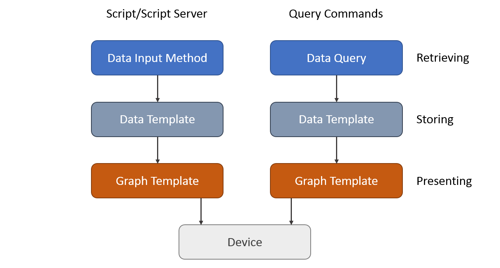

To understand Cacti's principal of operation, you have to start at the top and work down. Cacti's operational model is divided into multiple layers. They include
Cacti Devices are either physical hosts, sensors, clusters, services, or any type of object with a name and that can provide information about it self that should go into a Graph or could be used to provide additional information useful for Operations.
The Cacti Device object serves as the center Cacti's world it's where stores information on how gather data about it. You can have from one to tens of thousands of Devices monitored from one Cacti system. It's very scalable. They can be discovered using Cacti's Automation sub-system, added manually, or gathered from a CMDB and added to Cacti using it's command line interface.
Cacti works with Sites. So, when you add a phyical Device to Cacti, you can associate it with a Site. Sites are designed to be physical locations. Cacti can organize Devices and it's Graphs by Site in a convenient fashion.
These are the physical or virtual hosts or containers that gather data about a group of devices either within a network or a site. They are resiliant in that if the central Cacti server is not reachable, they will cache data and wait for it to become available again.
Cacti supports upto dozens of Data Collectors today. Some customers use somethings as simple as a Raspberry Pi or Nuk for Data Collectors. However, Virtual Machines are preferred as they can be migrated live which does not interrupt data collection.
The Data Collectors first and foremost task it to retrieve data and forward it to the main Cacti server for storage. Cacti will do so using its poller which is a part of the Data Collector. The Poller is executed from the operating system's scheduler or from systemd depending on the OS and the version of the OS. It collects data as frequently as every 10 seconds to hours dynamically in the same system. So, one Cacti system can be monitoring objects at a 10 second granularity, a 30 second granularity, 1 minute all the way to once per several hours.
In the image below, you can see the general flow of data from the device to the Cacti database.
In enterprise installations, you're dealing with potentially thousands of devices of different type, e.g. Servers, Network Equipment, Appliances, Sensors, PDU's, Static Transfer Switches and the like. To retrieve data from remote targets/hosts, Cacti will mainly use the Simple Network Management Protocol SNMP. Thus, all devices capable of using SNMP will be eligible to be monitored by Cacti. But that's just the simplest case.
Many customers gather data using out of band processes like using the Cacti hmib Plugin, which stores data in transient tables, and then Cacti can do device data collection directly from those transient tables. That design, since no device can be nearer in latency than the database, can scale to 30, 40, even 50 thousand devices with relative ease in Cacti depending on the size of your database and data collector infrastructure (sockets, cores, threads). When using this N-Tiered methology, most customers will use Cacti's script server which is a pool of memory resident PHP interpreters that preloads all scripts used to gather data, therefore, it's super fast, and parallel in nature. However, most customers will use SNMP, or SSH to gather metrics from their Devices. I mean, how many companies have 50 thousand devices that they monitor with regularity?
Once the data has been gathered, Cacti then uses either an out-of-band or in-band process to store the data into Round Robin Archive files, which represent a flat very well performing Time Series Databases called RRDfiles. See below for details on that storage mechanism.
In the industry, storage of the resulting data can take many forms. In Cacti, the RRDfile has been the tool of choice for many years. There are only so many ways to make a hammer, and RRDtool's a great hammer. Other approaches in the industry use SQL database, others flat files or document stores like ElasticSearch, Splunk, Mongo DB, InfluxDB. There are a number of options out there. You can get more information about RRDfile from the RRDtool Website.
RRD is an acronym for Round Robin Database. RRD is a system to store and display time-series data (i.e. network bandwidth, machine-room temperature, server load average). It stores the data in a very compact way that will not expand over time, and it can create beautiful graphs. Data that ages beyond a certain point is consolidated and very old data just rolls off the end of the RRDfile. It ages out. This keeps storage requirements at bay.
As mentioned, performs consolidation to combine raw data (a primary data point in RRDtool lingo) to consolidated data (a consolidated data point). This way, historical data is compressed to save space. RRDtool knows different consolidation functions: AVERAGE, MAXIMUM, MINIMUM and LAST.
One of the most appreciated features of RRDtool is the built-in graphing function. This comes in useful when combining this with some commonly used web server. Such, it is possible to access the graphs from merely any browser on any platform.
The Graphing engine is quite flexible. It is possible, to graph one or many items in one graph. Auto-scaling is supported and logarithmic y-axis, left and right axes, and much much more. You may stack items onto another and print pretty legends denoting characteristics such as minimum, average, maximum and lots more.
As mentioned, scripts and Queries extend Cacti's capabilities beyond just SNMP. They allow for data retrieval using custom-made code. This is not even restricted to certain programming languages; you will find PHP, Perl, Python, shell/batch and more. These scripts and queries are executed locally by Cacti's Poller. But they may retrieve data from remote hosts by different protocols, e.g.
| Protocol | Description |
|---|---|
| ICMP | ping to measure round trip times and availability |
| telnet | programming telnet scripts to retrieve data available to sysadmins only |
| ssh | much like telnet, but more secure (and more complicated) |
| http(s) | invoke remote cgi scripts to retrieve data via a web server or parse web pages for statistical data (e.g. some network printers) |
| snmp | use Net-SNMP's exec/pass functions to call remote scripts and get data |
| ldap | to retrieve statistical about your ldap server's activities |
| use your own | invoke Nagios agents |
and much more...
There a two ways extending Cacti's build-in capabilities:
Data Input Methods for querying single or multiple, but non-indexed readings
Data Queries for indexed readings

By using the Exporting and Importing facilities, it is possible to share your results with others.
Cacti is not just a Graphing platform, it's also a Network Operations Framework. Thought the dozens of plugins and user contributed Graph Templates, the sky is the limit as to what can be done using the Cacti Framework. It's stood the test of time now in it's 19th year of existence in the Open Source world.
Copyright (c) 2004-2024 The Cacti Group